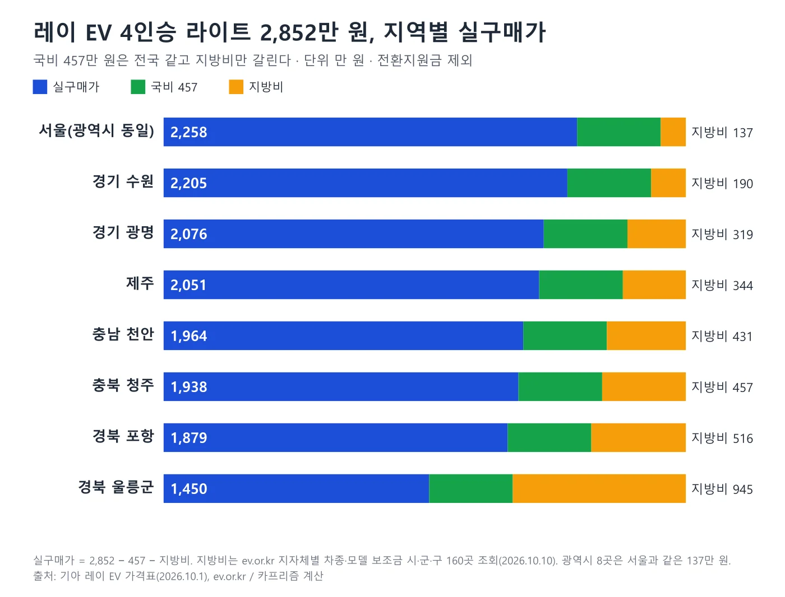
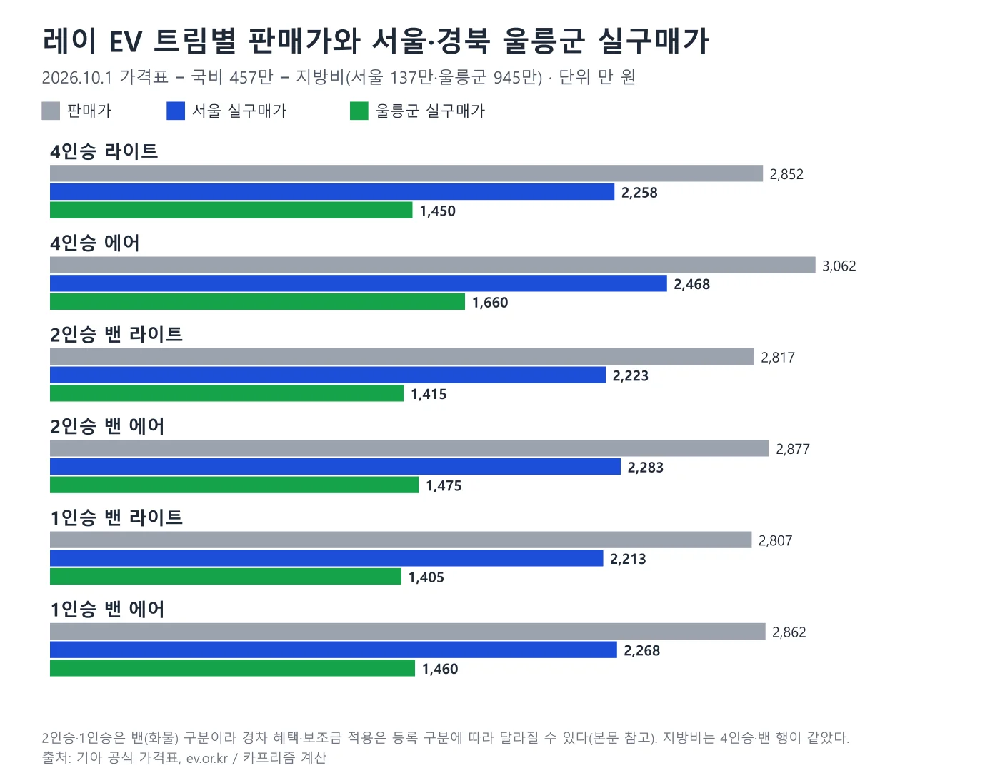
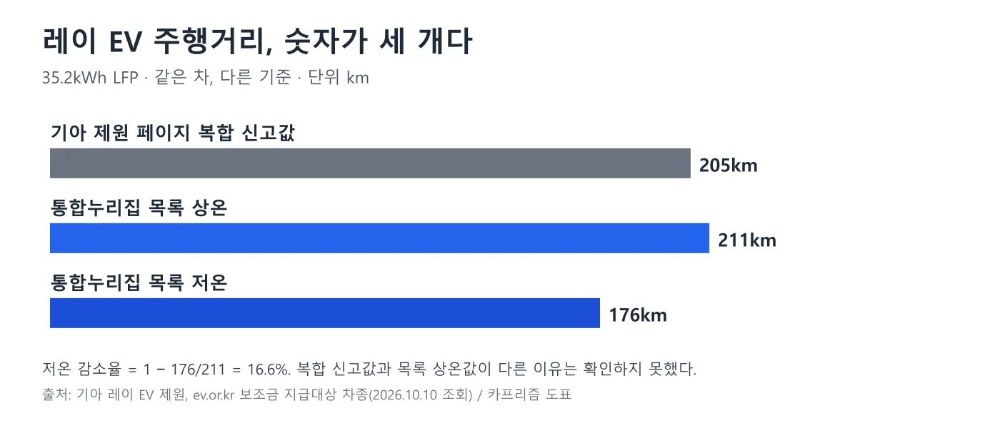
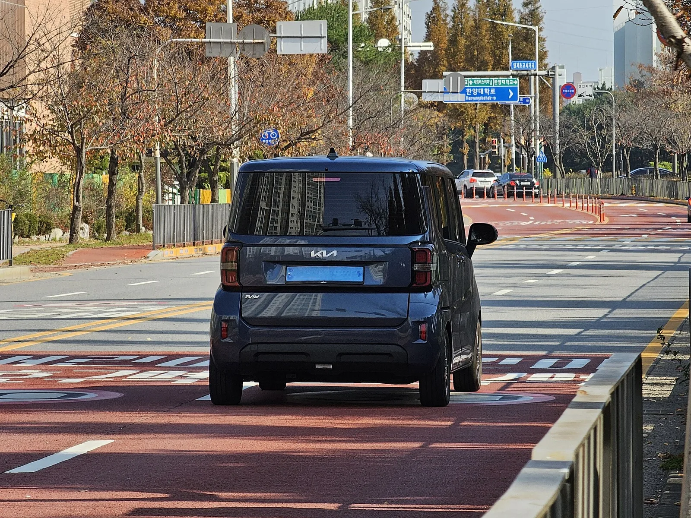
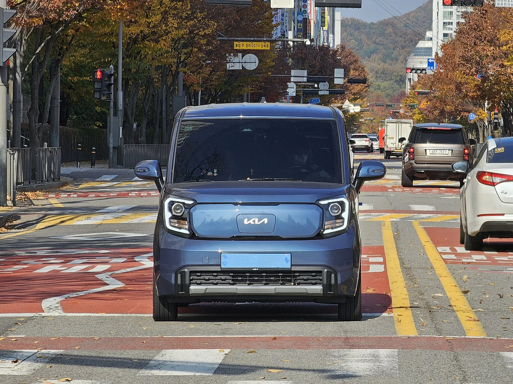

▲ 도로 위의 기아 레이 EV(파일명 기준 레이 EV, 색·연식·트림은 확정하지 않는다). 번호판 글자는 보이지 않는다 ⓒ Damian B Oh, Wikimedia Commons (CC BY-SA 4.0)
"경차인데 1,400만 원대까지 내려간다더니." 9월 13일 카프리즘 기사는 레이 EV 실구매가를 "지역에 따라 1,400만원대"까지 내려간다고 적었다. 무공해차 통합누리집(ev.or.kr)의 2026년 10월 10일 조회 값으로 다시 계산해 보니, 기아 2027 레이 EV 4인승 라이트 2,852만 원(2026년 10월 1일 가격표)에서 국비 457만 원과 지방비 137만 원(서울)을 빼면 2,258만 원, 지방비가 516만 원인 경북 포항에서는 1,879만 원이다. 1,400만 원대는 시·군·구 160곳을 모두 열어 본 결과 지방비가 945만 원으로 가장 큰 경북 울릉군에서만 나왔다. 4인승 라이트 1,450만 원, 1인승 밴 라이트 1,405만 원이다. 서울 같은 대도시 거주자에게 1,400만 원대는 해당하지 않으며, 앞선 기사의 국비 "600만~650만 원"과 서울 지방비 "약 450만 원"도 목록과 다르다. 이 글은 트림별 공식 가격에 같은 국비·지역별 지방비를 적용한 표와, 취득세·주행거리까지 한 번에 정리한다.
레이 EV 소개와 오너 평가는 레이 EV 리뷰 기사, 가솔린·EV 전체 라인업은 레이 시승기 종합, 출고 대기는 레이 10개월 대기 기사에서 다뤘다. 경차 세제 혜택 5년 합계는 경차 혜택 5년 합계 기사에 있다. 이 글은 새로 조회한 보조금 값으로 실구매가를 다시 계산하는 데 집중한다.
1. 기준 — 가격표 날짜, 보조금 조회 범위
가격은 기아 레이 EV 가격표(2026년 10월 1일 기준, 페이지 제목 "The 2027 Ray EV")에서 가져왔다. 레이 EV는 경형이어서 가격표가 세제혜택 전·후로 나뉘지 않고 한 값만 적혀 있다. 보조금은 무공해차 통합누리집의 '보조금 지급대상 차종' 목록(국비)과 '지자체별 차종·모델 보조금'(지방비)에서 조회했다. 지방비는 광역시·도별 목록을 열고 페이지를 넘겨 가며 시·군·구 160곳(광역시는 1곳씩, 제주는 1곳)을 모두 확인했다. 한국자동차환경협회·한국환경공단 행은 지자체가 아니어서 제외했다. 목록은 수시로 바뀔 수 있고, 이 160곳이 전국 지자체 전체와 일치하는지는 따로 대조하지 못했다.
실구매가의 계산식은 판매가−국비−지방비다. 전환지원금과 청년·다자녀 등 추가지원은 조건이 맞아야 하므로 기본 표에서 뺐다. 옵션(스타일 60만 원 등), 취득세, 등록비용도 뺐다.
2. 트림별 공식 가격 — 4인승 승용과 밴 둘로 나뉜다
레이 EV는 4인승 승용, 2인승 밴, 1인승 밴 세 구분에 라이트·에어 두 트림이 있다. 가장 싼 값은 1인승 밴 라이트 2,807만 원이고 가장 비싼 값은 4인승 에어 3,062만 원으로 255만 원 차이다. 4인승 라이트와 에어의 차이는 210만 원(=3,062−2,852)이다. 에어는 후측방 충돌 경고, 14인치 알로이 휠, 앞좌석·뒷좌석 열선시트, 운전석 통풍시트 등이 더해진다(가격표 구성 기준).
| 구분 | 라이트 | 에어 | 주요 선택품목(가격표, 트림별로 선택 가능 품목이 다름) |
|---|---|---|---|
| 4인승 승용 | 2,852 | 3,062 | 스타일 60, 컴포트Ⅰ 60, 컴포트Ⅱ 45(컴포트Ⅰ 적용 시), 드라이브 와이즈 30, 그레이 투톤 46 |
| 2인승 밴 | 2,817 | 2,877 | 컴포트Ⅰ 40, 컴포트Ⅱ 25, 드라이브 와이즈 30 |
| 1인승 밴 | 2,807 | 2,862 | 스타일 60, 컴포트Ⅰ 35, 드라이브 와이즈 30 |
통합누리집 목록은 세 구분을 모두 "전기승용(경·소형)"으로 분류하고, 2WD 14인치 기준 국비 457만 원 한 줄씩을 적는다. 즉 4인승이든 밴이든 국비는 같다. 가격표 구성은 레이 EV 가격표 바로가기에서 볼 수 있다.
▲ 도로 위의 기아 레이 EV(파일명 기준 레이 EV, 색·연식·트림은 확정하지 않는다). 번호판 글자는 보이지 않는다 ⓒ Damian B Oh, Wikimedia Commons (CC BY-SA 4.0)
3. 국비 457만 원 — 앞선 기사의 "600만~650만 원"과 다르다
통합누리집 2026년 10월 10일 조회에서 레이 EV 2WD 14인치 3개 행(1인승 밴, 2인승 밴, 4인승 승용)의 국비는 모두 457만 원이었다. 카프리즘 9월 13일 레이 EV 기사는 "국고 약 600만~650만 원"이라고 적었고, 서울 지방비도 약 450만 원으로 적었다. 그 기사의 보조금 구간은 "약"을 붙인 범주형 추정이었고 통합누리집 값이 아니었다. 목록 값은 국비 457만 원, 서울 지방비 137만 원이다. 앞선 기사의 구간은 목록과 맞지 않아 이 글의 값이 우선한다.
2026년 업무처리지침은 국비를 자동차 성능(연비·주행거리), 저공해차 보급목표 달성실적, 가격인하 여부 등을 고려해 산정한다. 목록의 457만 원이 어떤 항목의 합인지는 목록에 없어 확인하지 못했다. 지침은 지방비를 국비의 30% 이상으로 편성하도록 한다. 서울이 457×30%=137만 원(소수점 반올림 137.1)인 것과 맞는다.
📍 앞선 기사와 달라진 숫자
국비 600만~650만 원 → 목록 457만 원. 서울 지방비 약 450만 원 → 137만 원. 서울 4인승 라이트 실구매가 약 1,750만 원대 → 2,258만 원. "1,400만 원대"는 지방비 945만 원인 울릉군(4인승 라이트 1,450만 원)에서만 맞고, 서울·광역시에서는 맞지 않는다. 통합누리집 목록은 금액이 수시로 바뀔 수 있어 구매 직전 조회가 필요하다. 보조금 지급대상 차종 바로가기
4. 지방비 — 지역에 따라 137만~945만 원
지방비는 지자체가 정한다. 서울과 부산·대구·인천·광주·대전·울산·세종은 모두 137만 원이다. 경기 부천·남양주·하남·광주와 경남 양산도 137만 원이어서 137만 원인 곳은 13곳이다. 경기 수원 190만 원, 광명 319만 원, 제주 344만 원, 충남 천안 431만 원, 충북 청주 457만 원, 경북 포항 516만 원이었다. 경북은 울릉군을 뺀 21곳이 모두 516만 원이다. 전남 보성·완도는 685만 원, 해남·진도는 607만 원이고, 가장 큰 곳은 경북 울릉군 945만 원이다. 지방비가 국비(457만 원)와 같은 곳은 충북 청주 등 16곳이고, 국비보다 큰 곳은 경북·전남 일부와 울릉군 등에서 나온다. 아래 표는 같은 가격표에 지역별 지방비만 바꿔 넣은 값이다.
| 지역 | 지방비 | 국비+지방비 소계 | 4인승 라이트 실구매가(2,852) | 4인승 에어 실구매가(3,062) | 라이트에 전환지원금 118 반영(참고) |
|---|---|---|---|---|---|
| 서울(대구·인천·광주·대전·울산·세종 동일) | 137 | 594 | 2,258 | 2,468 | 2,140 |
| 경기 수원 | 190 | 647 | 2,205 | 2,415 | 2,087 |
| 경기 광명 | 319 | 776 | 2,076 | 2,286 | 1,958 |
| 제주 | 344 | 801 | 2,051 | 2,261 | 1,933 |
| 충남 천안 | 431 | 888 | 1,964 | 2,174 | 1,846 |
| 충북 청주 | 457 | 914 | 1,938 | 2,148 | 1,820 |
| 경북 포항(경주·안동 등 같은 값) | 516 | 973 | 1,879 | 2,089 | 1,761 |
| 경북 울릉군(조회 160곳 중 최대) | 945 | 1,402 | 1,450 | 1,660 | 1,332 |
서울 4인승 라이트 기준 소계 594만 원은 판매가의 20.8%, 경북 포항 소계 973만 원은 34.1%, 울릉군 소계 1,402만 원은 49.2%다. 계산식은 서울 2,852−457−137=2,258, 포항 2,852−457−516=1,879, 울릉군 2,852−457−945=1,450이다. 서울과 포항의 차이는 379만 원(=516−137), 서울과 울릉군의 차이는 808만 원(=945−137)이다. 전환지원금 118만 원(국비 91+지방비 27)은 조건을 채운 사람에게만 해당하므로 마지막 열은 참고값이다.

▲ 4인승 라이트 2,852만 원의 지역별 실구매가(조회 160곳 중 대표 8곳). 국비는 전국 같고 지방비만 갈린다. 카프리즘 제작 도표
| 트림 | 판매가 | 서울(지방비 137) | 경북 포항(지방비 516) | 경북 울릉군(지방비 945) |
|---|---|---|---|---|
| 4인승 승용 라이트 | 2,852 | 2,258 | 1,879 | 1,450 |
| 4인승 승용 에어 | 3,062 | 2,468 | 2,089 | 1,660 |
| 2인승 밴 라이트 | 2,817 | 2,223 | 1,844 | 1,415 |
| 2인승 밴 에어 | 2,877 | 2,283 | 1,904 | 1,475 |
| 1인승 밴 라이트 | 2,807 | 2,213 | 1,834 | 1,405 |
| 1인승 밴 에어 | 2,862 | 2,268 | 1,889 | 1,460 |

▲ 여섯 트림의 판매가와 서울·경북 울릉군 실구매가. 카프리즘 제작 도표
5. 전환지원금과 추가지원 — 조건이 맞으면 얼마가 더 줄어드나
2026년 지침의 전환지원금은 최초 등록 후 3년 이상 지난 내연기관차(하이브리드 제외)를 판매 또는 폐차한 개인이 해당 차량을 3년 이상 보유한 경우 국비 100만 원 이내를 더 지원한다. 금액은 일반 국비에 비례해 정해지고(100만 원×국비÷500만 원), 레이 EV는 100×457÷500=91.4만 원이어서 목록의 91만 원과 같다. 지방비 전환지원금은 27만 원(경기 화성은 30만 원)이다. 2026년 1월 1일 이후 판매·폐차 건부터 인정되고 가족 간 증여·판매는 제외된다.
그 밖에 지침은 차상위 이하 계층(국비의 20% 추가), 청년(19~34세) 생애 첫 차 구매(국비의 20% 추가), 다자녀가구(18세 이하 자녀 2명 100만 원, 3명 200만 원, 4명 이상 300만 원)를 추가지원으로 둔다. 이 추가지원이 레이 EV 같은 경형·소형 행에 목록 값 그대로 얹히는지, 지자체별 분담 방식은 어떤지는 지역마다 달라 확인하지 못했다. 지방비 소진 시기는 지침이 2026년 9월 이후 개인에게 국비만 지원하는 길도 허용하므로 신청 시점에 거주지 공고를 확인해야 한다.
6. 취득세와 경차 혜택 — 레이 EV는 취득세가 0원이다
레이 EV는 경형 규격(전장 3,595mm·전폭 1,595mm·전고 1,710mm)이다. 경차 혜택의 법적 조건과 5년 합계는 10월 4일 경차 혜택 기사에 정리했다. 취득세는 두 규정이 겹친다. 지방세특례제한법 제67조 제1항은 비영업용 경형 승용차의 취득세를 75만 원까지 면제하고(2027년 12월 31일까지), 제66조 제4항은 전기자동차의 취득세를 140만 원까지 면제한다(2026년 12월 31일까지). 같은 과세대상에 감면이 둘 이상이면 감면액이 큰 하나만 적용한다는 제180조에 따라 레이 EV는 140만 원 쪽이 적용된다. 취득세는 공급가액(판매가÷1.1)에 경차 세율 4%를 곱하므로 4인승 라이트 2,852만 원은 약 1,037,091원, 에어 3,062만 원은 약 1,113,455원이고 둘 다 140만 원 이하여서 0원이다. 기아 레이 EV 특징 페이지도 "세율 4%(140만원 한도 감면) → 0원"으로 안내한다. 같은 계산에서 경차 감면(75만 원)만 적용되면 라이트는 약 287,091원, 에어는 약 363,455원이 되지만, 전기차 감면이 더 커서 이 금액은 내지 않는다.
다만 두 감면 모두 기한이 있다. 전기차 감면은 조문상 2026년 12월 31일까지여서, 출고 대기가 길어 등록이 2027년으로 넘어가면 달라질 수 있다. 2027년 이후 한도(기아 안내의 100만 원)는 이번에 조문으로 확인하지 못했다. 농어촌특별세 등 부가 세목은 계산에 넣지 않았다. 통행료와 공영주차장 50% 감면은 경형 기준이고, 조건은 10월 4일 기사에 있다. 전기차·경차 공영주차 감면은 공영주차장 감면 기사에서 지역별 차이를 다뤘다.

▲ 충전 중인 레이 EV(초기 세대로 보이는 전시차, 현행 2026년형과 외관이 다르다). 경차 감면과 전기차 감면이 겹치면 감면액이 큰 하나만 적용된다(지방세특례제한법 제180조) ⓒ Rutger van der Maar, Wikimedia Commons (CC BY 2.0)
7. 주행거리·배터리 — 숫자가 세 개다
레이 EV의 배터리는 CATL이 중국에서 만든 35.2kWh 리튬인산철(LFP) 각형 셀이다(기아 제원 페이지). 정부 신고 에너지 소비효율은 복합 5.1km/kWh(도심 6.0, 고속도로 4.4)이고 1회 충전 주행거리는 복합 205km(도심 233km, 고속도로 171km)다. 통합누리집 목록은 같은 레이 EV 2WD 14인치를 상온 211km, 저온 176km로 적는다. 저온 감소율(=1−176÷211)은 16.6%이고, 보조금 가중주행거리(=상온×0.75+저온×0.25)는 0.75×211+0.25×176=202.25km다. 기아 제원 페이지는 205km를 "산업부 신고 수치", 표준모드 기준이라고 밝힌다. 목록의 상온 211km가 어떤 시험 기준·기관의 값인지는 어디에서도 설명을 찾지 못해 두 값이 다른 이유는 확인하지 못했다.

▲ 레이 EV 주행거리의 세 가지 표기. 카프리즘 제작 도표
📍 고전압 배터리 보증과 충전
기아 레이 EV 페이지는 고전압 배터리 보증을 "10년/20만km"로 표기하고, "개인 최초 고객 기준"이라는 유의문이 붙는다. 급속·완속 충전 시간은 이번에 열어 본 공식 페이지에서 찾지 못해 싣지 않았다. 기아는 비상용 완속 충전 케이블(220V ICCB)을 별도 액세서리로 안내한다. 겨울철 영향은 저온 감소율 기사의 107행 순위에서 볼 수 있다.

▲ 레이 EV 후면(파일명 기준, 색·연식은 확정하지 않는다). 박스형 후미가 보인다 ⓒ Damian B Oh, Wikimedia Commons (CC BY-SA 4.0)
8. 밴(1·2인승)을 고를 때 — 값은 싸지만 확인할 것이 있다
가격표에서 1인승 밴 라이트 2,807만 원은 4인승 라이트보다 45만 원 싸다. 서울 실구매가는 2,213만 원(=2,807−457−137)이다. 통합누리집은 밴도 전기승용 분류로 같은 국비를 준다. 그러나 밴은 가격표에서 승용과 따로 구분된다. 취득세는 전기차 감면(제66조 제4항)이 차종 유형과 무관하게 적용되고, 경형 승합·화물차는 제67조 제2항에 따라 별도로 면제(2027년 12월 31일까지)되므로 밴이어도 0원일 가능성이 크지만 실제 등록 유형은 등록처 확인이 필요하다. 통행료 할인, 보험·연료비 구조가 승용과 같은지는 이번에 확인하지 못했다. 지침상 개인은 지자체, 법인·개인사업자는 한국환경공단을 통해 신청하는 경로가 나뉜다. 구매 전 지자체 담당과 차량 등록처에 구분을 물어야 한다.

▲ 레이 EV 정면(파일명 기준, 연식·트림은 확정하지 않는다). 번호판 글자는 보이지 않는다 ⓒ Damian B Oh, Wikimedia Commons (CC BY-SA 4.0)
체크포인트: 신청 순서와 주의 (2026년 업무처리지침 기준)
- 순서: 구매계약 → 구매 지원신청서 접수 → 지자체 대상자 선정·통보 → 차량 출고·등록(2개월 이내 원칙) → 제작사 보조금 신청(출고·등록 후 10일 이내) → 지급(14일 이내 원칙)
- 납부: 구매자는 차량 대금과 보조금의 차액만 제작사에 낸다
- 재지원 제한: 개인이 같은 차종을 2년 안에 2대 이상 사면 첫 1대만 지원된다
- 대기: 레이는 출고 대기가 길다. 계약 후 대기 기간 동안 지방비 소진 여부를 다시 확인해야 한다(10개월 대기 기사)
- 지방비 조회: 지자체별 차종·모델 보조금 바로가기
9. 이 글이 확인하지 못한 것
- 지방비 목록 범위: 시·군·구 160곳을 모두 조회했으나 전국 지자체 수와 대조하지 못했고, 목록과 소진 현황은 수시로 바뀐다
- 취득세: 2027년 이후 전기차 감면 한도, 밴의 실제 등록 유형에 따른 적용
- 국비 457만 원의 산정 내역과 복합 205km·목록 상온 211km의 차이 이유
- 충전 시간과 추가지원(청년·다자녀 등)이 경형 행에서 실제로 얹히는 방식
- 통행료·주차 감면의 EV·밴 적용 세부 조건(10월 4일 기사 참고)
10. 요약
기아 2027 레이 EV 4인승 라이트 2,852만 원(2026.10.1 가격표)은 국비 457만 원을 빼면 서울 2,258만 원(지방비 137만 원), 경북 포항 1,879만 원(지방비 516만 원), 경북 울릉군 1,450만 원(지방비 945만 원)이다. 시·군·구 160곳·여섯 트림 중 가장 낮은 값은 울릉군 1인승 밴 라이트 1,405만 원이다. 앞선 기사의 "1,400만 원대"는 울릉군에서만 맞고, "국비 600만~650만 원"과 서울 "지방비 약 450만 원"은 목록과 맞지 않았다.
전환지원금(국비 91만+지방비 27만 원)은 조건 충족 시 추가된다. 인증 주행거리는 목록 상온 211km·저온 176km(감소율 16.6%), 제원 페이지 복합 205km이며 배터리는 35.2kWh LFP, 고전압 배터리 10년/20만km로 표기된다.
취득세는 전기차 감면이 경차 감면보다 커서 4인승 모두 0원이다(2026년 12월 31일까지 등록분). 205km와 211km의 차이 이유, 충전 시간, 2027년 이후 감면 한도는 확인하지 못했다. 지방비는 소진 시점에 따라 달라지므로 신청 직전 거주지 공고로 확인해야 한다.